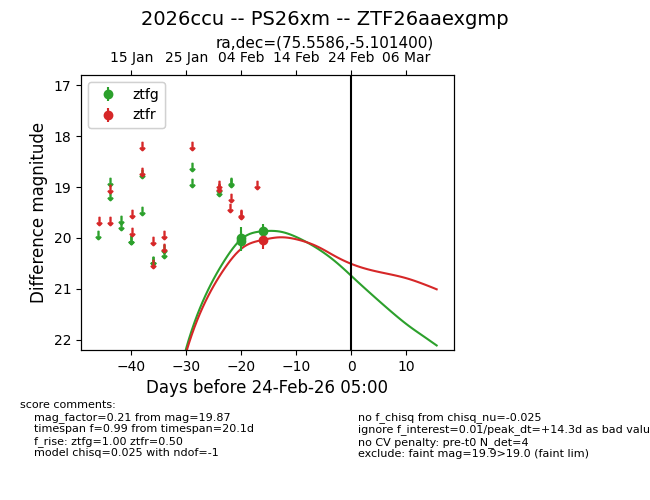
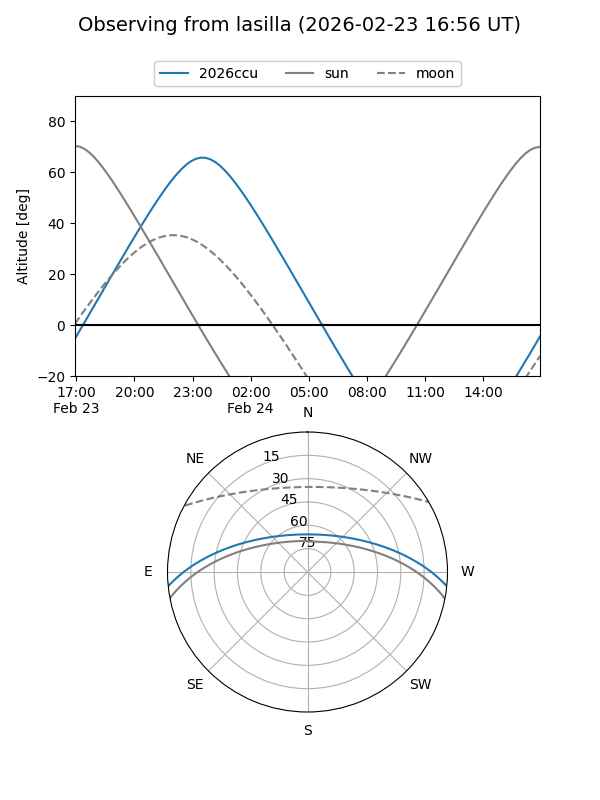
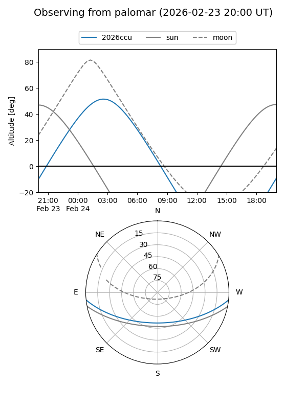

2026ccu
Target 2026ccu at 2026-02-24 09:08
Aliases and brokers:
FINK: link
Lasair: link
ALeRCE: link
TNS: link
YSE: link
alt names
ZTF26aaexgmp (ztf,fink_ztf)
2026ccu (tns,yse)
PS26xm (panstarrs)
Coordinates:
equatorial (ra, dec) = 75.5586,-5.10140
equatorial (HMS+DMS) = 05:02:14.07,-05:06:05.04
galactic (l, b) = (204.6283,-26.55988)
Flags:
Photometry:
last ztfg=19.87, ztfr=20.04
3 ztfg, 1 ztfr detections
Lightcurve

Visibility


Additional plots